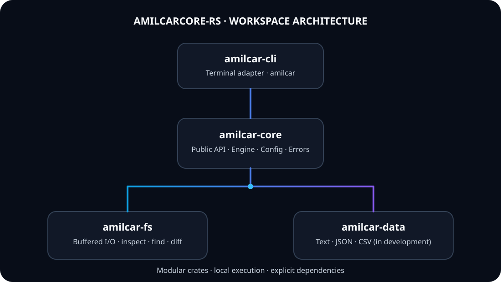

What is it?
A modular workspace with a reusable library and a CLI for local file inspection and processing. The documented core workflows do not require external APIs or a remote server.
Architecture

Execution flow

Requirements
- Rust and Cargo 1.75 or newer.
- Git to clone the repository.
- Linux, Windows and macOS in CI; Android/Termux depends on the available toolchain.
Quick installation
git clone https://github.com/AmilcarGit/AmilcarCore-RS.git
cd AmilcarCore-RS
sh scripts/install.sh
amilcar infoFor Termux and Linux distributions, see the complete installation guide.
Implemented commands
Engine information
amilcar infoMetadata inspection
amilcar file inspect ./document.txtFile comparison
amilcar file diff ./original.txt ./copy.txtRecursive search
amilcar file find ./documents --extension json
amilcar file find ./project --name configDemonstration

Inspection output depends on the metadata of the file on your device.
File operations
amilcar file copy ./source.txt ./copy.txt
amilcar file copy ./source.txt ./copy.txt --overwrite
amilcar file move ./copy.txt ./file.txt
amilcar file rename ./file.txt final.txt
amilcar file mkdir ./data/new
amilcar file remove ./file.txt
amilcar file rmdir ./data/new
amilcar file hash ./file.txt
amilcar file duplicates ./documentsCopy does not overwrite by default. rmdir removes empty directories only; remove accepts regular files only.
Project status
Early development · Stage 3. The workspace foundation and advanced filesystem operations have been implemented in this stage. Expanded text and JSON/CSV processing, benchmarks and full platform verification remain on the roadmap.
License
MIT or Apache License 2.0, at your option. See LICENSE-MIT and LICENSE-APACHE.